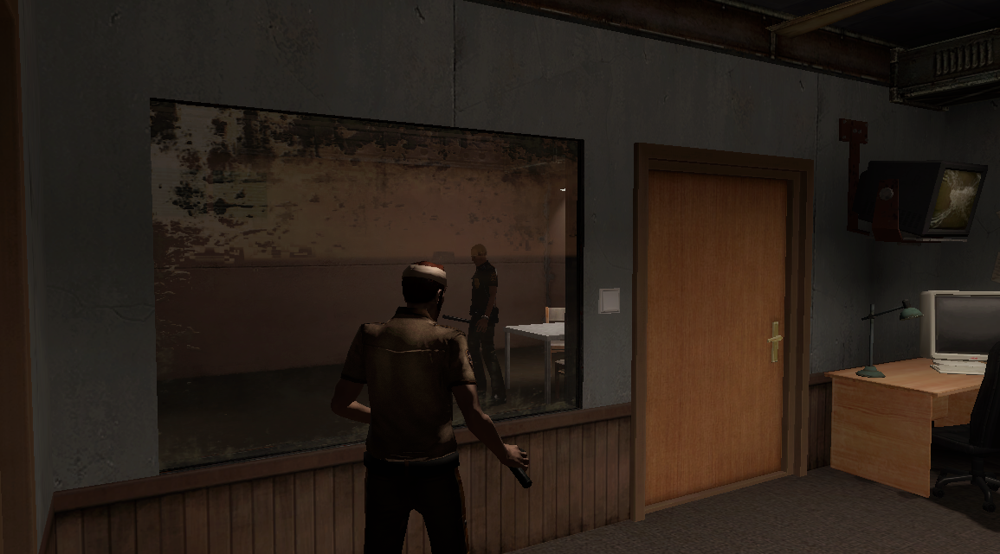
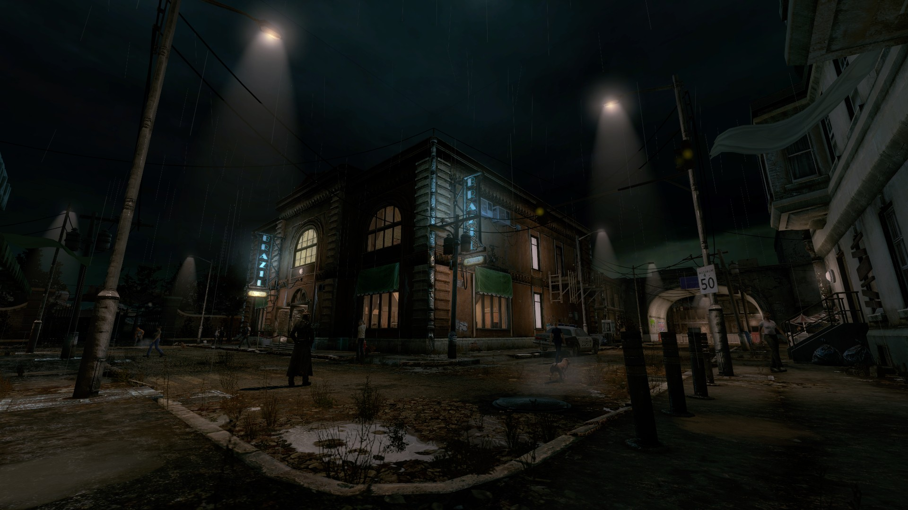
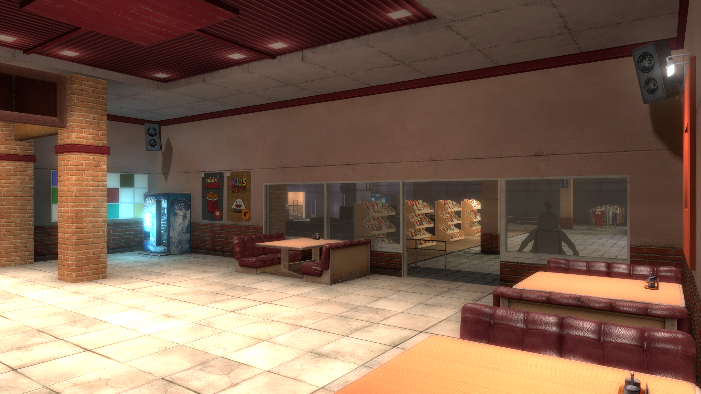
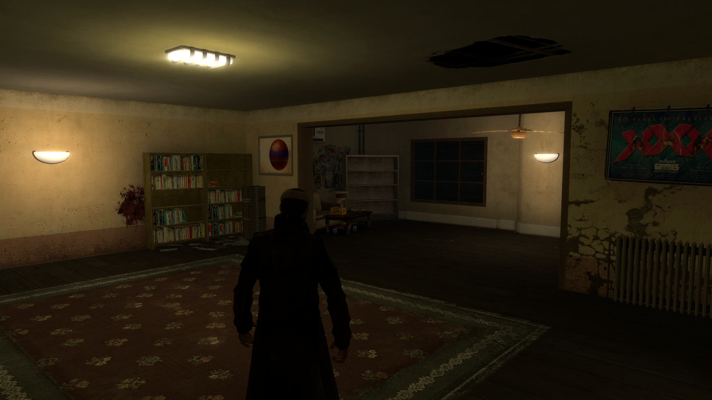
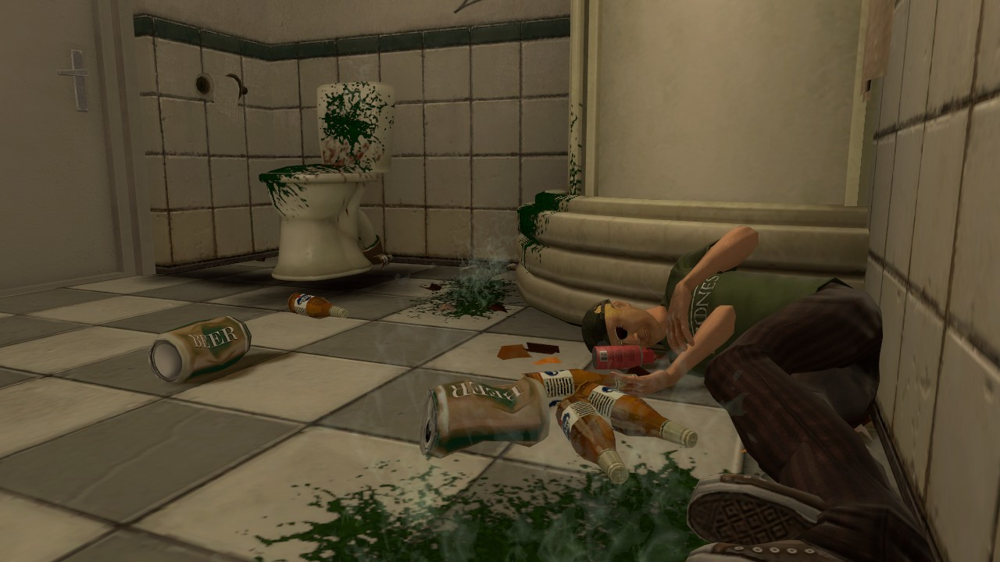
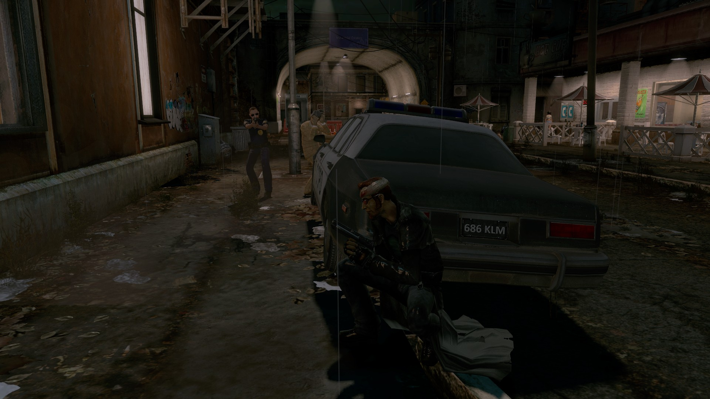
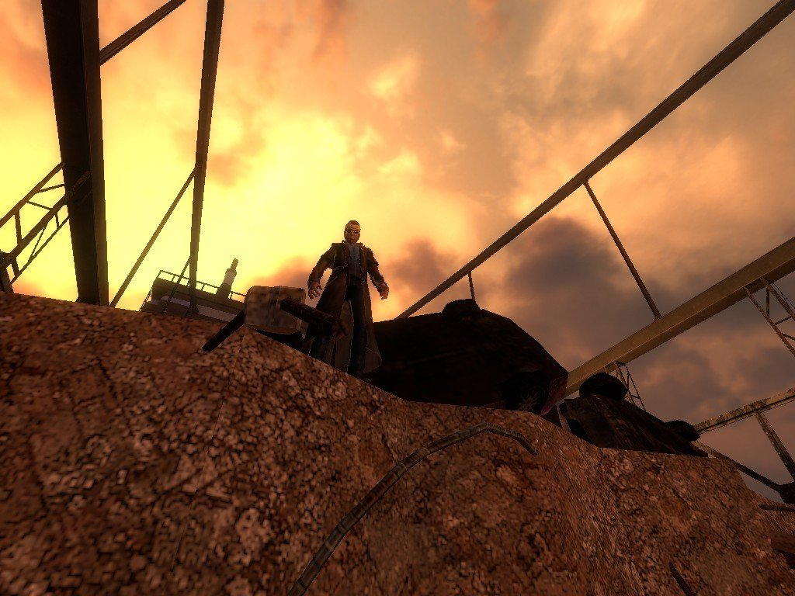
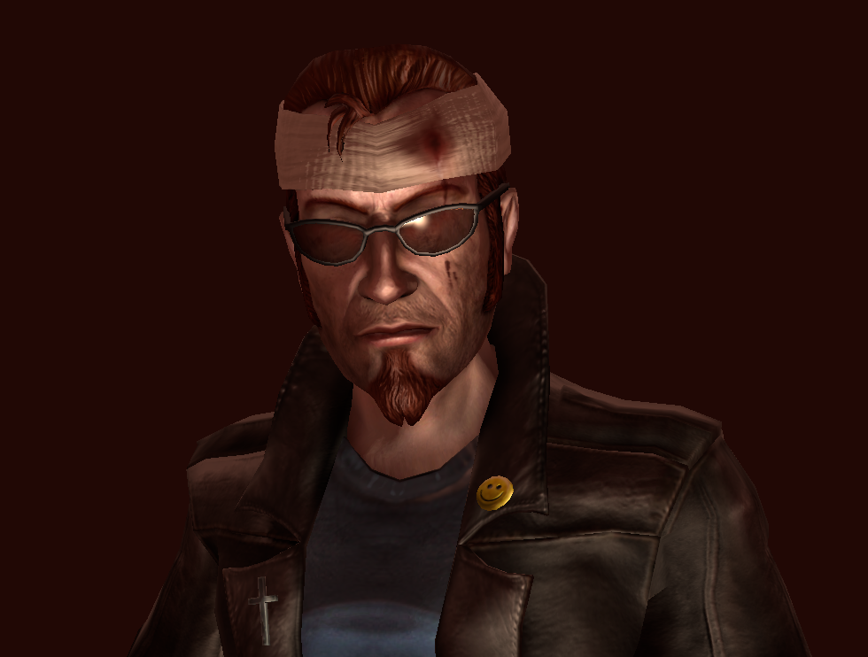
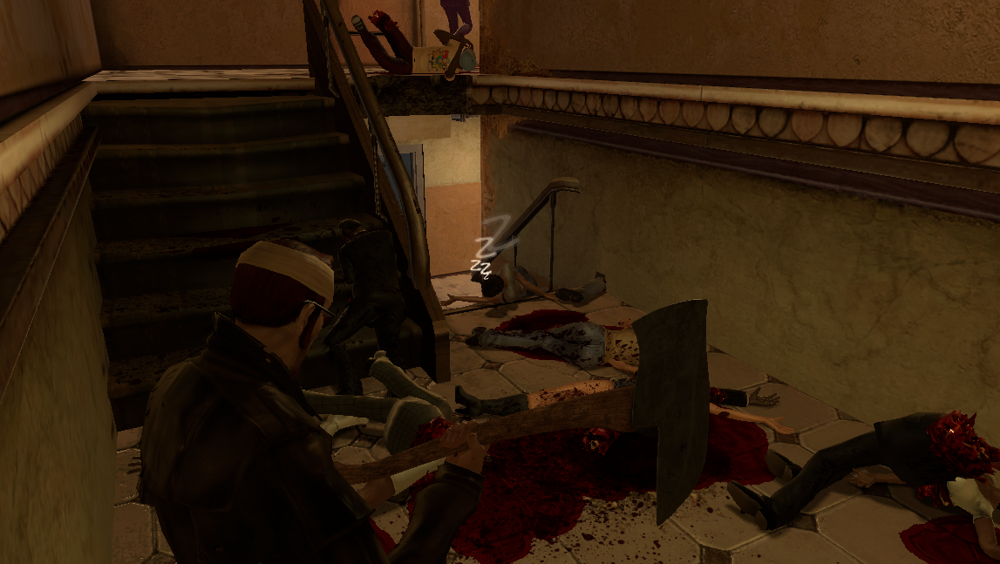

Catharsis Reborn is a total conversion mod for Postal 3 that acts as a free unofficial sequel to POSTAL 2 and its expansion, Apocalypse Weekend. The mod overhauls vanilla Postal 3 by fixing numerous base game bugs, introducing an all new story, new maps, missions, weapons and more, based on both our own original designs and early previews of Postal 3 from 2007-2009. Like POSTAL 2, CR's gameplay is designed around an open world which can be freely explored in-between missions.
NOTE: These are work in progress images, and do not necessarily reflect the final release of the mod









Social Media: